측량및지형공간정보산업기사 (2016-10-01 기출문제)
1과목: 응용측량
1. 완화곡선의 성질에 대한 설명으로 틀린 것은?
- 완화곡선 반지름은 종점에서 원곡선의 캔트와 같다.
- 완화곡선 반지름은 시점에서 무한대이다.
- 완화곡선에 연한 곡선반지름의 감소율은 캔트의 증가율과 같다.
- 완화곡선의 접선은 시점에서 직선에 접하고 종점에서는 원호에 접한다.
(정답률: 61%)

2. 노선측량의 곡선설치법에서 단곡선의 요소에 대한 식으로 옳지 않은 것은? (단, R은 곡률반지름, I는 교각이다.)
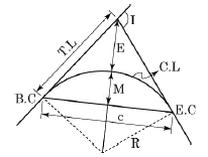
- 곡선길이 = C.L = R·I(I는 라디안)
- 장현 = C = 2R·sin(I/2)
- 접선길이 = T.L = R·tan(I/2)
- 중앙종거 = M = R(sec(I/2)-1)
(정답률: 68%)
3. 단곡선을 설치하기 위하여 곡선시점의 좌표가 (1000.500m, 200.400m), 곡선반지름이 300m, 교각이 60°일 때, 곡선시점으로부터 교점의 방위각이 120°일 경우, 원곡선 종점의 좌표는?
- (680.921m, 328.093m)
- (740.692m, 350.400m)
- (1233.966m, 433.766m)
- (1344.666m, 544.546m)
(정답률: 51%)
4. 단곡선 설치 방법 중 접선과 현이 이루는 각을 이용하는 방법으로 정확도가 비교적 높은 것은?
- 편각 설치법
- 지거 설치법
- 접선에 의한 지거법
- 장현에서의 종거에 의한 설치법
(정답률: 68%)
5. 터널 내에서 차량 등에 의하여 파손되지 않도록 콘크리트 등을 이용하여 만든 중심말뚝을 무엇이라 하는가?
- 도갱
- 자이로(gyro)
- 레벨(level)
- 다보(dowel)
(정답률: 81%)
6. 다음 표에서 성토부분의 총 토량으로 옳은 것은? (단, 양단면 평균법 공식 적용)
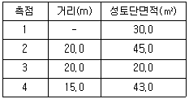
- 1873m3
- 1982m3
- 2103m3
- 2310m3
(정답률: 51%)
7. 10m 간격의 등고선으로 표시되어 있는 구릉지에서 구적기로 면적을 구한 값이 Ao=100m2, A1=150m2, A2=300m2, A3=450m2, A4=800m2일 때 각주 공식에 의한 체적은? (단, 정상(Ao)부분은 평탄한 것으로 가정)
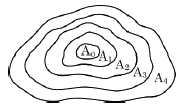
- 11000m3
- 12000m3
- 13000m3
- 14000m3
(정답률: 70%)
8. 평균 유속을 2점법으로 결정하고자 할 때, 수면으로부터의 관측수심 위치는? (단, h：수심)
- 0.2h, 0.6h
- 0.4h, 0.6h
- 0.2h, 0.8h
- 0.4h, 0.8h
(정답률: 87%)
9. 수로측량의 기준에 대한 설명으로 옳은 것은?
- 간출암은 평균해수면으로부터의 높이로 표시한다.
- 노출암은 기본수준면으로부터의 높이로 표시한다.
- 수심은 기본수준면으로부터의 깊이로 표시한다.
- 해안선은 관측 당시의 육지와 해면의 경계로 표시한다.
(정답률: 67%)
10. 그림에서 △ABC의 토지를 BC에 평행한 선분 DE로 △ADE：□BCED＝2：3으로 분할하려고 할 때 AD의 길이는? (단, AB의 길이＝50m)
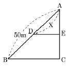
- 30.32m
- 31.62m
- 33.62m
- 35.32m
(정답률: 59%)
11. 수애선(水涯線)과 수애선 측량에 대한 설명으로 틀린 것은?
- 수면과 하안(河岸)과의 경계선을 수애선이라 한다.
- 수애선은 하천 수위에 따라 변동하는 것으로 저수위에 의하여 정해진다.
- 수애선 측량에는 심천측량에 의한 방법과 동시관측에 의한 방법이 있다.
- 심천측량에 의한 방법을 이용할 때에는 수위의 변화가 적은 시기에 심천측량을 행하여 하천의 횡단면도를 먼저 만든다.
(정답률: 69%)
12. 지중레이다(GPR, Ground Penetration Radar) 탐사기법은 전자파의 어떤 성질을 이용하는가?
- 방사
- 반사
- 흡수
- 산란
(정답률: 80%)
13. 하천의 수면 기울기를 결정하기 위해 200m 간격으로 동시 수위를 측정하여 표와 같은 결과를 얻었다. 이 결과에서 구간 1~5의 평균 수면 기울기(하향)는?
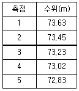
- 1/900
- 1/1000
- 1/1250
- 1/2000
(정답률: 55%)
14. 그림과 같이 터널 내의 천정에 측점을 정하여 관측하였을 때, AB 두 점의 고저 차가 40.25m이고 a=1.25m, b=1.85m이며, 경사거리 S=100.50m이었다면 연직각(α)은?
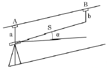
- 15° 25′ 34″
- 23° 14′ 11″
- 34° 28′ 42″
- 45° 30′ 28″
(정답률: 53%)
15. 터널측량에 관한 설명으로 옳지 않은 것은?
- 터널측량은 터널 외 측량과 터널 내 측량, 터널 내외 연결측량으로 구분할 수 있다.
- 터널 내의 곡선설치는 현편거법 또는 트래버스 측량을 활용할 수 있다.
- 터널 내 측량에서는 기계의 십자선, 표척눈금 등에 조명이 필요하다.
- 터널 내의 수준측량은 정확도를 위해 레벨과 수준척에 의한 직접수준측량으로만 측정한다.
(정답률: 78%)
16. 원곡선 설치에 관한 설명으로 틀린 것은?
- 원곡선 설치를 위해서는 기본적으로 도로기점으로부터 교점의 추가거리, 교각, 원곡선의 곡선반지름을 알아야 한다.
- 중앙종거를 이용하여 원곡선을 설치하는 방법을 중앙종거법이라 하며 4분의 1법이라고도 한다.
- 교점의 위치는 항상 시준 가능해야 하므로 교점의 위치가 산, 하천 등의 장애물이 있는 경우에는 원곡선 설치가 불가능하다.
- 각측량 장비가 없는 경우에는 지거를 활용하여 복수의 줄자만 가지고도 원곡선 설치가 가능하다.
(정답률: 62%)
17. 어느 도면상에서 면적을 측정하였더니 400m2이었다. 이 도면이 가로, 세로 1%씩 축소되어 있었다면 이때 발생되는 면적오차는?
- 4m2
- 6m2
- 8m2
- 12m2
(정답률: 62%)
18. 세 변의 길이가 각각 20m, 30m, 40m인 삼각형의 면적은 약 얼마인가?
- 90m2
- 180m2
- 240m2
- 290m2
(정답률: 71%)
19. 클로소이드 곡선의 성질에 대한 설명으로 옳지 않은 것은? (단, R：곡선의 반지름, L：곡선 길이, A：매개변수)
- 클로소이드 요소는 모두 길이 단위를 갖는다.
- 은 클로소이드의 기본식이다.
- 클로소이드는 나선의 일종이다.
- 모든 클로소이드는 닮은꼴이다.
(정답률: 70%)
20. 다음 중 주로 종단곡선으로 사용되는 것은?
- 렘니스케이트
- 2차 포물선
- 3차 나선
- 클로소이드
(정답률: 71%)
2과목: 사진측량 및 원격탐사
21. 영상지도 제작에 사용되는 가장 적합한 영상은?
- 경사 영상
- 파노라믹 영상
- 정사 영상
- 지상 영상
(정답률: 83%)
22. 레이다 위성 영상의 특성에 대한 설명으로 옳은 것은?
- 깜깜한 밤이나 구름이 낀 경우에도 영상을 얻을 수 있다.
- 가시 영역뿐만 아니라 적외선 영역의 영상을 얻을 수 있다.
- 분광대를 연속적으로 세분하여 수십 개의 분광영상을 얻을 수 있다.
- 기복변위가 나타나지 않아 정밀위치결정이 가능하다.
(정답률: 77%)
23. 항공사진의 촬영사진기 중 보통각 사진기의 시야각은?
- 30°
- 60°
- 80°
- 120°
(정답률: 80%)
24. 사진 표정작업 중 절대표정에 해당되지 않는 것은?
- 지구곡률 결정
- 축척 결정
- 수준면의 결정
- 위치 결정
(정답률: 62%)
25. 항공사진측량의 촬영계획을 위한 고려사항으로 옳은 것은?
- 촬영시간은 태양 고도가 높은 오전 10시부터 오후 2시를 피하는 것이 좋다.
- 종중복도는 최소 50% 이상으로 하고, 도심지에서는 작업 효율을 위해 10% 정도 감소시킨다.
- 동일 촬영고도의 경우 보통각 카메라가 광각 카메라보다 축척이 크므로 경제적이다.
- 계획촬영 코스로부터 수평 이탈은 계획고도의 15% 이내로 한다.
(정답률: 63%)
26. 항공사진이나 위성영상의 한 화소(Pixel)에 해당하는 지상거리 X, Y를 무엇이라 하는 가?
- 지상표본거리
- 평면거리
- 곡면거리
- 화면거리
(정답률: 59%)
27. 인공위성 센서의 지상 자료 취득 방식 중 푸시브룸(Push-Broom) 방식에 대한 설명으로 옳은 것은?
- SAR와 같은 마이크로파를 이용한 원격탐사 분야에 주로 사용된다.
- 회전이나 진동하는 거울을 통해 탑재체의 이동방향에 수직으로 스캐닝한다.
- 위성의 비행 방향에 따라 관측하고자 하는 관측 폭만큼 스캐닝한다.
- 한쪽 방향으로 기운 형태의 기복 변위 영상이 생성된다.
(정답률: 56%)
28. 단사진에서 기복변위 공식의 적용에 대한 설명으로 틀린 것은?
- 연직사진에 대해서만 적용할 수 있다.
- 서로 다른 위치의 표고 차를 측정할 수 있다.
- 건물에 대해 적용하면 건물의 높이를 추산할 수 있다.
- 지표가 튀어나온 돌출지역에서는 사진 중심의 안쪽으로 보정하여야 한다.
(정답률: 49%)
29. 초점거리가 150mm이고 촬영고도가 1500m인 수직 항공사진에서 탑(Tower)의 높이를 계산하려고 한다. 주점으로부터 탑의 밑 부분까지 거리가 4cm, 탑의 꼭대기까지 거리가 5cm라면 이 탑의 실제 높이는?
- 50m
- 150m
- 300m
- 500m
(정답률: 45%)
30. 원격탐사 자료처리 중 기하학적 보정에 해당되는 것은?
- 영상대조비 개선
- 영상의 밝기조절
- 화소의 노이즈 제거
- 지표기복에 의한 왜곡제거
(정답률: 78%)
31. 영상처리 방법 중 토지피복도와 같은 주제도 제작에 주로 사용되는 기법은?
- 영상강조(image enhancement)
- 영상분류(image classification)
- 영상융합(image fusion)
- 영상정합(image matching)
(정답률: 57%)
32. 내부표정에 대한 설명으로 옳은 것은?
- 모델과 모델이나 스트립과 스트립을 접합시키는 작업
- 사진기의 초점거리와 사진의 주점을 결정하는 작업
- 종시 차를 소거하여 모델 좌표를 얻게 하는 작업
- 측지좌표로 축척과 경사를 바로잡는 작업
(정답률: 79%)
33. 항공삼각측량 방법 중 상좌표를 사진좌표로 변환시킨 다음 사진좌표로부터 절대좌표를 구하는 방법으로 가장 정확도가 높은 것은?
- 도해법
- 독립모델법(IMT)
- 스트립조정법(strip adjustment)
- 번들조정법(bundle adjustment)
(정답률: 61%)
34. 촬영고도 6000m에서 찍은 연직사진의 중복도가 종중복도 50%, 횡중복도 30%라고 하면 촬영종기선장(B)과 촬영횡기선장(C)의 비(B：C)는?
- 3：5
- 5：7
- 5：3
- 7：5
(정답률: 67%)
35. 다음 중 과고감이 가장 크게 나타나는 사진기는?
- 광각 사진기
- 보통각 사진기
- 초광각 사진기
- 사진기의 종류와는 무관하다.
(정답률: 77%)
36. 초점거리가 f이고, 사진의 크기가 a×a인 항공사진이 촬영 시 경사도가 이었다면 사진에서 주점으로부터 연직점까지의 거리는?
- αㆍtanα
- αㆍtan(α/2)
- fㆍtanα
- fㆍtan(α/2)
(정답률: 69%)
37. 상호표정의 인자로만 짝지어진 것은?
- κ, bx
- λ, by
- Ω, Sx
- ω, bz
(정답률: 77%)
38. 원격탐사의 탐측기에 의해 수집되는 전자기파 0.7μm~3.0μm 정도 범위의 파장대를 가지고 있으며 식생의 종류 및 상태조사에 유용한 것은?
- 가시광선
- 자외선
- 근적외선
- 극초단파
(정답률: 57%)
39. 초점거리 150mm의 카메라로 촬영고도 3000m에서 찍은 연직사진의 축척은?
- 1/5000
- 1/20000
- 1/25000
- 1/30000
(정답률: 73%)
40. 다음과 같이 어느 지역의 영상으로부터 '논'의 훈련지역(training field)을 선택하여 해당 영상소를 'P'로 표기하였다. 이때 산출되는 통계값으로 옳은 것은?
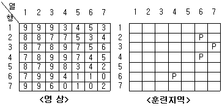
- 최댓값：6
- 최솟값：0
- 평균：4.00
- RMSE：±1.58
(정답률: 70%)
3과목: GIS 및 GPS
41. 지리정보시스템(GIS) 자료를 출력하기 위한 장비가 아닌 것은?
- 모니터
- 프린터
- 플로터
- 디지타이저
(정답률: 62%)
42. GPS에서 채택하고 있는 타원체는?
- GRS 80
- WGS 84
- Bessel 1841
- 지오이드
(정답률: 78%)
43. 지리정보시스템(GIS)에서 표준화가 필요한 이유에 대한 설명으로 거리가 먼 것은?
- 서로 다른 기관 간 데이터의 복제를 방지하고 데이터의 보안을 유지하기 위하여
- 데이터의 제작 시 사용된 하드웨어(H/W)나 소프트웨어(S/W)에 구애받지 않고 손쉽게 데이터를 사용하기 위하여
- 표준 형식에 맞추어 하나의 기관에서 구축한 데이터를 많은 기관들이 공유하여 사용할 수 있으므로
- 데이터의 공동 활용을 통하여 데이터의 중복 구축을 방지함으로써 데이터 구축비용을 절약하기 위하여
(정답률: 76%)
44. 도시 계획 및 관리 분야에서의 지리정보시스템(GIS) 활용 사례와 거리가 먼 것은?
- 개발가능지 분석
- 토지이용변화 분석
- 지역기반마케팅 분석
- 경관분석 및 경관계획
(정답률: 68%)
45. 부영상소 보간방법 중 출력영상의 각 격자점 (x, y)에 해당하는 밝기를 입력영상좌표계의 대응점 (x′, y′) 주변의 4개 점 간 거리에 따라 영상소의 경중률을 고려하여 보간하며 영상에 존재하는 영상값을 계산하거나 표고값을 계산하는 데 주로 사용되는 보간 방법은?
- nearest-neighbor interpolation
- bilinear interpolation
- bicubic convolution interpolation
- kriging interpolation
(정답률: 60%)
46. 벡터 데이터와 래스터 데이터를 비교 설명한 것으로 옳지 않은 것은?
- 래스터 데이터의 구조가 비교적 단순하다.
- 래스터 데이터가 환경 분석에 더 용이하다.
- 벡터 데이터는 객체의 정확한 경계선 표현이 용이하다.
- 래스터 데이터도 벡터 데이터와 같이 위상을 가질 수 있다.
(정답률: 75%)
47. 지리정보시스템(GIS)의 정확도 향상 방안과 직접적인 관계가 없는 것은?
- 자료의 검증 확대
- 신뢰도 높은 자료의 활용
- 작업 단계별 정확도 검증
- 개방형 GIS의 도입
(정답률: 74%)
48. 다음 중 래스터 데이터 구조의 자료를 압축 저장하는 방법이 아닌 것은?
- Run-length code 기법
- Chain code 기법
- Quad-tree 기법
- Polynomial 기법
(정답률: 69%)
49. 우리나라 측지측량 좌표 결정에 사용되고 있는 기준타원체는?
- Airy 타원체
- GRS80 타원체
- Hayford 타원체
- WGS84 타원체
(정답률: 65%)
50. 지리정보시스템에 이용되는 GIS 소프트웨어의 모듈기능이 아닌 것은?
- 자료의 출력
- 자료의 입력과 확인
- 자료의 저장과 데이터베이스 관리
- 자료를 전송하기 위한 전화선으로 구성된 네트워크 시스템
(정답률: 66%)
51. 수치표고모델(DEM, Digital Elevation Model)의 응용분야에 대한 설명으로 거리가 먼것은?
- 도시의 성장을 분석하기 위한 시계열 정보
- 도로의 부지 및 댐의 위치 선정
- 수치지형도 작성에 필요한 고도 정보
- 3D를 통한 광산, 채석장, 저수지 등의 설계
(정답률: 56%)
52. 지리정보시스템(GIS) 소프트웨어가 갖는 CAD와의 가장 큰 차이점은?
- 대용량의 그래픽 정보를 다룬다.
- 위상구조를 바탕으로 공간분석 능력을 갖추었다.
- 특정 정보만을 선택하여 추출할 수 있다.
- 다양한 축척으로 자료를 출력할 수 있다.
(정답률: 76%)
53. GPS 신호는 두 개의 주파수를 가진 반송파에 의해 전송된다. 두 개의 주파수를 사용하는 이유는?
- 수신기 시계오차 소거
- 대류권 지연오차 소거
- 전리층 지연오차 소거
- 다중 경로오차 소거
(정답률: 55%)
54. 다음의 래스터 데이터에 최댓값 윈도우(max kernel)를 3×3 크기로 적용한 결과로 옳은 것은?
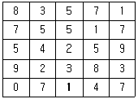
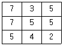
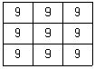
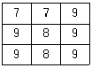
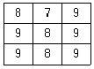
(정답률: 66%)
55. GNSS 측량의 직접적인 활용분야로 거리가 먼 것은?
- 육상 및 영해 기준점 측량
- 지각 변동 감시
- 실내 인테리어
- 지오이드 모델 개발
(정답률: 84%)
56. 계층형 데이터베이스 모형에 대한 설명으로 옳지 않은 것은?
- 계층형 데이터베이스 모형은 트리구조를 가진다.
- 계층구조 내의 자료들이 논리적으로 관련이 있는 영역으로 나누어진다.
- 동일한 계층에서의 검색은 부모 레코드를 거치지 않고는 불가능하다.
- 하나의 객체는 여러 개의 부모 레코드와 자식 레코드를 가질 수 있다.
(정답률: 66%)
57. 다음 중 공간정보자료 파일 형식 중 벡터 데이터가 아닌 것은?
- filename.dwg
- filename.tif
- filename.shp
- filename.dxf
(정답률: 59%)
58. 새주소(도로명)사업 등 GIS 업무에 있어서 경위도 또는 X, Y 등과 같은 지리적인 좌표를 기록하는 작업을 무엇이라 하는가?
- Geocoding
- Metadata
- Annotation
- Georeferencing
(정답률: 64%)
59. 다음과 같은 데이터를 등간격(equal interval) 방법을 이용하여 4개의 그룹으로 분류(classify)한 결과로 옳은 것은?
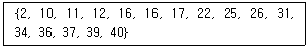
- {2, 10}, {11, 12, 16, 16, 17}, {22, 25, 26}, {31, 34, 36, 37, 39, 40}
- {2, 10}, {11, 12}, {16, 16}, {17, 22, 25, 26, 31, 34, 36, 37, 39, 40}
- {2, 10, 11, 12}, {16, 16, 17, 22}, {25, 26, 31, 34}, {36, 37, 39, 40}
- {2, 10}, {11, 12, 16}, {16, 17, 22, 25}, {26, 31, 34, 36, 37, 39, 40}
(정답률: 59%)
60. GPS를 이용한 반송파 위상관측법에서 위성에서 보낸 파장과 지상에서 수신된 파장의 위상차만 관측하므로 전체 파장의 숫자는 정확히 알려져 있지 않은데 이를 무엇이라 하는 가?
- Cycle Slip
- Selective Availability
- Ambiguity
- Pseudo Random Noise
(정답률: 49%)
4과목: 측량학
61. 그림과 같은 교호수준측량의 결과가 다음과 같을 때 B점의 표고는? (단, A점의 표고는 100m이다.)
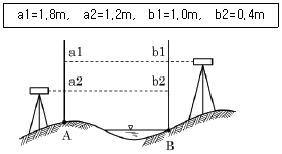
- 100.4m
- 100.8m
- 101.2m
- 101.6m
(정답률: 67%)
62. A점은 20m의 등고선 상에 있고, B점은 30m의 등고선 상에 있다. 이때 AB의 경사가 20%이면 AB의 수평거리는?
- 25m
- 35m
- 50m
- 65m
(정답률: 62%)
63. 수평각관측법 중 조합각관측법으로 한 점에서 관측할 방향 수가 일 때 총 각관측 수는?
- (N-1)(N-2)/2
- N(N-1)/2
- (N+1)(N-1)/2
- N(N+1)/2
(정답률: 53%)
64. 등고선의 종류에 대한 설명 중 옳은 것은?
- 등고선의 간격은 계곡선 → 주곡선 → 조곡선 → 간곡선 순으로 좁아진다.
- 간곡선은 일점쇄선으로 표시한다.
- 계곡선은 조곡선 5개마다 1개씩 표시한다.
- 일반적으로 등고선의 간격이란 주곡선의 간격을 의미한다.
(정답률: 69%)
65. 타원체의 적도반지름(장축)이 약 6378.137km이고, 편평률은 약 1/298.257이라면 극반지름(단축)과 적도반지름의 차이는?
- 11.38km
- 21.38km
- 84km
- 298.257km
(정답률: 56%)
66. 표준길이보다 7.5mm가 긴 30m 줄자를 사용하여 420m를 관측하였다면 실제 거리는?
- 419.895m
- 419.915m
- 420.085m
- 420.1⑤m
(정답률: 63%)
67. 삼각측량에 대한 작업순서로 옳은 것은?
- 선점 → 조표 → 기선측량 → 각측량 → 방위각계산 → 삼각망도 작성
- 선점 → 조표 → 기선측량 → 방위각계산 → 각측량 → 삼각망도 작성
- 조표 → 선점 → 기선측량 → 각측량 → 방위각계산 → 삼각망도 작성
- 조표 → 선점 → 기선측량 → 방위각계산 → 각측량 → 삼각망도 작성
(정답률: 67%)
68. 최소제곱법의 관측방정식이 AX=L+V 와 같은 행렬식의 형태로 표시될 때, 이 행렬식을 풀기 위한 정규방정식이 AT+AX=ATL일 때, 미지수 행렬 X로 옳은 것은?
- X = (AT)1L
- X = (AT)-1L
- X = (AAT)-1 ATL
- X = (ATA)-1 ATL
(정답률: 57%)
69. 측량의 오차와 연관된 경중률에 대한 설명으로 틀린 것은?
- 관측 횟수에 비례한다.
- 관측값의 신뢰도를 의미한다.
- 평균제곱근오차의 제곱에 비례한다.
- 직접수준측량에서는 관측거리에 반비례한다.
(정답률: 64%)
70. 그림과 같이 직접법으로 등고선을 측량하기 위하여 레벨을 세우고 표고가 40.25m인 A점에 세운 표척을 시준하여 2.65m를 관측했다. 42m 등고선 위의 점 B에서 시준하여야 할 표척의 높이는?
- 0.90m
- 1.40m
- 3.90m
- 4.40m
(정답률: 62%)
71. 강철줄자에 의한 거리측량에 있어서 강철줄자의 장력에 대한 보정량 계산을 위한 요소가 아닌 것은?
- 줄자의 탄성계수
- 줄자의 단면적
- 줄자의 단위중량
- 관측시의 장력
(정답률: 47%)
72. 트래버스 측량에서 전 측선의 길이가 1100m이고, 위거 오차가 +0.23m, 경거 오차가 –0.35m일 때 폐합비는?
- 약 1/4200
- 약 1/3200
- 약 1/2600
- 약 1/1400
(정답률: 50%)
73. 줄자를 사용하여 경사면을 따라 50m의 거리를 관측한 경우 수평거리를 구하기 위하여 실시한 보정량이 4cm일 때의 양단 고저차는?
- 1.00m
- 1.40m
- 1.73m
- 2.00m
(정답률: 39%)
74. 삼각망 조정을 위하여 만족되어야 하는 3가지 조건이 아닌 것은?
- 하나의 관측점 주위에 있는 모든 각의 합은 360°가 되어야 한다.
- 삼각망을 구성하는 각각의 변은 서로 교차하지 않아야 한다.
- 삼각망 중 각각의 삼각형 내각의 합은 180°가 되어야 한다.
- 삼각망 중에서 임의 한 변의 길이는 계산의 순서에 관계없이 일정하여야 한다.
(정답률: 54%)
75. 측량업의 등록취소 등의 관련 사항 중 1년 이내의 기간을 정하여 영업정지를 명할 수 있는 경우가 아닌 것은?
- 과실로 인하여 측량을 부정확하게 한 경우
- 정당한 사유 없이 1년 이상 휴업한 경우
- 측량업 등록사항의 변경신고를 하지 아니한 경우
- 거짓이나 그 밖의 부정한 방법으로 측량업의 등록을 한 경우
(정답률: 50%)
76. 측량기준점에서 국가기준점에 해당되지 않는 것은?(16.4회측지산업기사)
- 지적기준점
- 수로기준점
- 통합기준점
- 지자기점
(정답률: 47%)
77. 기본측량과 공공측량의 실시공고에 필수적 사항이 아닌 것은?(16.4회측지산업기사)
- 측량의 성과 보관 장소
- 측량의 실시기간
- 측량의 목적
- 측량의 종류
(정답률: 68%)
78. 공간정보의 구축 및 관리 등에 관한 법률에서 용어에 대한 정의로 옳지 않은 것은?
- 수로조사：해상교통안전, 해양의 보전ㆍ이용ㆍ개발, 해양관할권의 확보 및 해양재해 예방을 목적으로 하는 수로측량ㆍ해양관측ㆍ항로조사 및 해양지명조사를 말한다.
- 측량기록：측량성과를 얻을 때까지의 측량에 관한 작업의 기록을 말한다.
- 토지의 표시：지적공부에 토지의 소재ㆍ지번ㆍ지목ㆍ면적ㆍ경계 또는 좌표를 등록한 것을 말한다.
- 지도：측량 결과에 따라 공간상의 위치와 지형 및 지명 등 여러 공간정보를 일정한 축척에 따라 기호나 문자 등으로 표시한 것으로 수치지형도와 수치주제도는 제외된다.
(정답률: 61%)
79. 심사를 받지 않고 지도 등을 간행하여 판매하거나 배포한 자에 대한 벌칙기준으로 옳은 것은?
- 3년 이하의 징역 또는 3천만원 이하의 벌금
- 2년 이하의 징역 또는 2천만원 이하의 벌금
- 1년 이하의 징역 또는 1천만원 이하의 벌금
- 300만원 이하의 과태료
(정답률: 45%)
80. 공공측량의 실시에 대한 설명으로 옳은 것은?
- 다른 공공측량성과나 일반측량성과를 기초로 실시한다.
- 기본측량성과나 다른 공공측량성과를 기초로 실시한다.
- 기본측량성과나 일반측량성과를 기초로 실시한다.
- 기본측량성과만을 기초로 실시한다.
(정답률: 58%)
완화곡선 반지름은 종점에서 원곡선의 캔트와 같다는 것은 맞다. 완화곡선에 연한 곡선반지름의 감소율은 캔트의 증가율과 같다는 것도 맞다. 또한, 완화곡선의 접선은 시점에서 직선에 접하고 종점에서는 원호에 접한다는 것도 맞다.
하지만 완화곡선 반지름은 시점에서 무한대가 아니라, 시점에서는 원곡선의 반지름과 같다. 이는 완화곡선이 원곡선에서 출발하기 때문에 시점에서는 원곡선과 같은 반지름을 가지게 된다.